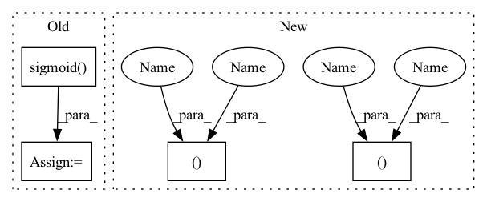

Pattern ID :40824

Before Change
Returns:
torch.Tensor: Saliency Map
saliency_map = torch.sigmoid(torch.mean(feature_map, dim=1))
saliency_map = (
255
* (saliency_map - torch.min(saliency_map))
/ (torch.max(saliency_map) - torch.min(saliency_map) + 1e-12)
After Change
Returns:
torch.Tensor: Saliency Map
bs, c, h, w = feature_map.size()
saliency_map = torch.mean(feature_map, dim=1)
saliency_map = saliency_map.reshape((bs, h * w))
max_values, _ = torch.max(saliency_map, -1)
min_values, _ = torch.min(saliency_map, -1)
saliency_map = (
255
* (saliency_map - min_values[:, None])
/ (max_values - min_values + 1e-12)[:, None]
)
saliency_map = saliency_map.reshape((bs, h, w))
saliency_map = saliency_map.to(torch.uint8)
return saliency_map
In pattern: SUPERPATTERN
Frequency: 3
Non-data size: 4
Instances
Fragment ID: 115201565
Project Name: openvinotoolkit/model_preparation_algorithm
Commit Name: e2c8010f30007ae6429e629b2c2a5b2c13815d07
Time: 2022-07-21
Author: eugene.liu@intel.com
File Name: mpa/modules/hooks/auxiliary_hooks.py
M Class Name: SaliencyMapHook
N Class Name: SaliencyMapHook
M Method Name: func(1)
N Method Name: func(1)
M Parent Class:
N Parent Class:
M File Name: mpa/modules/hooks/auxiliary_hooks.py
N File Name: mpa/modules/hooks/auxiliary_hooks.py
M Start Line: 87
M End Line: 92
N Start Line: 87
N End Line: 97
'>
Before Change
Returns:
torch.Tensor: Saliency Map
saliency_map = torch.sigmoid(torch.mean(feature_map, dim=1))
saliency_map = (
255
* (saliency_map - torch.min(saliency_map))
/ (torch.max(saliency_map) - torch.min(saliency_map) + 1e-12)
After Change
Returns:
torch.Tensor: Saliency Map
bs, c, h, w = feature_map.size()
saliency_map = torch.mean(feature_map, dim=1)
saliency_map = saliency_map.reshape((bs, h * w))
max_values, _ = torch.max(saliency_map, -1)
min_values, _ = torch.min(saliency_map, -1)
saliency_map = (
255
* (saliency_map - min_values[:, None])
/ (max_values - min_values + 1e-12)[:, None]
)
saliency_map = saliency_map.reshape((bs, h, w))
saliency_map = saliency_map.to(torch.uint8)
return saliency_map
'>
Fragment ID: 115201564
Project Name: openvinotoolkit/model_preparation_algorithm
Commit Name: e2c8010f30007ae6429e629b2c2a5b2c13815d07
Time: 2022-07-21
Author: eugene.liu@intel.com
File Name: mpa/modules/hooks/auxiliary_hooks.py
M Class Name: SaliencyMapHook
N Class Name: SaliencyMapHook
M Method Name: func(1)
N Method Name: func(1)
M Parent Class:
N Parent Class:
M File Name: mpa/modules/hooks/auxiliary_hooks.py
N File Name: mpa/modules/hooks/auxiliary_hooks.py
M Start Line: 87
M End Line: 92
N Start Line: 87
N End Line: 97
'>
Before Change
decoded_boxes = decode(loc.squeeze(0), prior).clamp(min=0, max=1)
decoded_boxes *= scale // scale each detection back up to the image
conf_scores = conf.squeeze(0).sigmoid()
keep = conf_scores.max(1)[0] > eval_thresh
decoded_boxes=decoded_boxes[keep]
conf_scores=conf_scores[keep]
After Change
conf_scores=conf_scores[keep]
keep = torchvision.ops.nms(decoded_boxes, conf_scores.max(1)[0], iou_threshold=nms_thresh)
decoded_boxes=decoded_boxes[keep]
conf_scores=conf_scores[keep]
(decoded_boxes, conf_scores) = decoded_boxes.cpu().numpy(), conf_scores.cpu().numpy()
return (decoded_boxes, conf_scores)
'>
Fragment ID: 115201566
Project Name: zhangheng19931123/mutualguide
Commit Name: 4cfe01d8ed981a40106818d60be8c5af05153d87
Time: 2021-11-16
Author: heng.zhang@irisa.fr
File Name: utils/box/detection.py
M Class Name: AnonimousClass
N Class Name: AnonimousClass
M Method Name: Detect(5)
N Method Name: Detect(5)
M Parent Class:
N Parent Class:
M File Name: utils/box/detection.py
N File Name: utils/box/detection.py
M Start Line: 10
M End Line: 25
N Start Line: 10
N End Line: 27